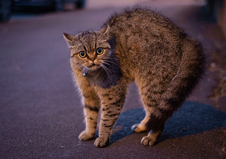
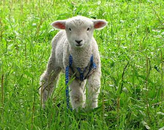
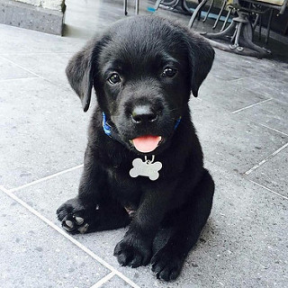
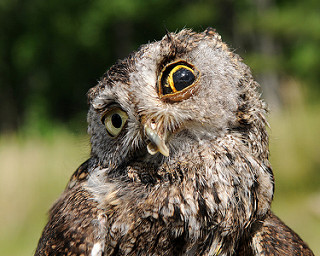
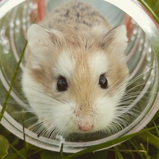

Don't let your thoughts bottle up and stress you out. BUTTON SMASH or write why you're angry. Don't hold back. There's no one watching.
Where should a 500 pound alien go? On a diet.
What did the laundryman say to the impatient customer? Keep your shirt on!
What's the difference between a TV and a newspaper? Ever tried swatting a fly with a TV?
What is green and has yellow wheels? Grass, I lied about the wheels!
How do you cure a headache? Put your head through a window and the pane will just disappear.
What is the stupidest animal in the jungle? The polar bear.
Two mice chewing on a film roll. One of them goes: "I think the book was better."
My grandfather had the heart of a lion and a lifetime ban from the New York City Zoo.
I remember the last thing my grandpa said before he kicked the bucket. He said "Hey, how do you think I can kick this bucket?"
Knock Knock. Who's there? Europe. Europe Who? No you're a poo!
And the lord said unto John "Come forth and you shall receive eternal life." John came fifth and won a toaster.
Being mindful means being aware of your body and mind. What is your body doing? Focus on every muscle from your toes to your head. What do you feel? Are any of your muscles tight? Contract and them relax them. If you aren't already, get comfortable. Do whatever makes you feel best. Are you breathing quickly? Try to slow it down. Take as much time as you can to breathe.
Now take a moment to focus on your thoughts. What is your emotional state? Now take three slow breaths. What is your next thought?
Hug yourself tightly and then stretch out all the muscles you can. Reach up as high as your can. Now relax and just breathe. That's all you have to do. There are no obligations or expectations. Just breathe.
Why are you sad? What else are you feeling? Let out all of your thoughts.
Thank you. Your feelings are important and valid, no matter how ridiculous they might seem to others.
Studies show that writing down what you're feeling helps understand those feelings and get rid of them.
Now imagine letting go of all of those feelings. Cry or scream, if you'd like. Release those feelings from your mind. Any sadness or anxiety you've been feeling doesn't exist in this moment.
Repeat one of these statements three times
Here's some adorable pictures of animals to cheer you up
    
The animals want you to be happy!
Take a moment to breathe. Get comfortable and try to breathe with the gif at least three times.
Now check in with yourself. What is your body feeling? Close your eyes and feel every part of your body from your toes to your head. Flex your muscles and then relsease.
What are you feeling specifically? What is causing these feelings?
Write down everything that is bothering you. Nobody is watching. This is just for you.
Every day young adults experience great amounts of stress. According to the ADAA 80% of college students say they experience daily stress, 34% have felt depressed in last three months, and about 13% have been diagnosed with a mental health disorder.
Some of the sources of stress are money, the future, and relationships.
Want to solve some of your problems? Here are some links:
Being a young adult is hard. You probably feel like almost every decision you make will change your life, every move is being watched and judged, and this is the end of crazy adventures.
You're wrong.
J.K. Rowling was rejected 12 times before Harry Potter was published and she was 32 years old. You don't have to be an instant success in order to succeed.
Bill Gates failed at his first company, Traf-O-Data before he succeeded at Microsoft. You can make mistakes.
Here are old people acting young. The adventures never end.
A 6-year-old child was hired as a railroad museum's director of fun
A group of bunnies is called a "fluffel".
In France, Muslims are attending Catholic masses in solidarity after the murder of a priest.
NASA had to relable sizes for the penis sleeve for urinating in space suits from "small, medium, and large" to "large, gigantic, and humongous" because astronauts would choose the large one and they kept slipping off.
A man in Canada walked into Tim Horton's and bought coffee for the next 500 customers.
Pope Francis makes cold calls to people who write to him.
A Dutch artists made a 40-foot-fall rubber ducky to sail through various bodies of water, thus, making the world a giant bathtub.
A woman found a teddy bear on a London train and through the internet found the little girl who owned it within two days.
A man in New Jersey offered free dry cleaning for the unemployed.
90% of your body mass is made with the same stuff as stardust, making you forged from stars
Young adults have to deal with these feelings every day, escpecially stress.
Other ways to relieve these feelings:
There are unhealthy ways to deal with these feelings such as taking it out on other people, drinking or doing drugs, and binge eating. Try to stay away from those. They don't really help the problem.
Do not try to hide your feelings from everyone. Find someone you trust and talk to them about it. If you find that your feelings are impossible to deal with or seem unhealthy, you should consult a doctor.
If you need immediate assistance call:
The National Suicide Prevention Lifeline (1-800-273-8255)